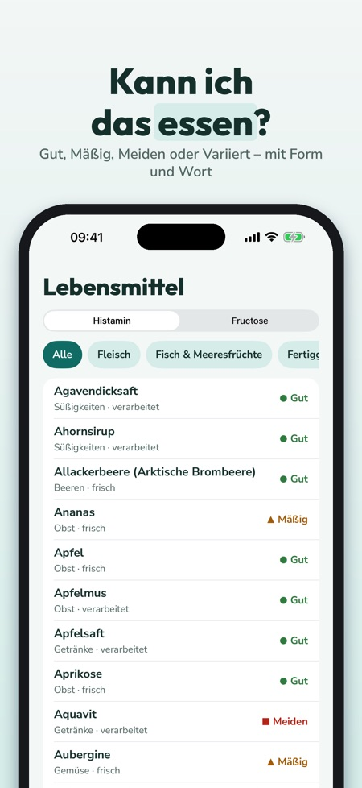
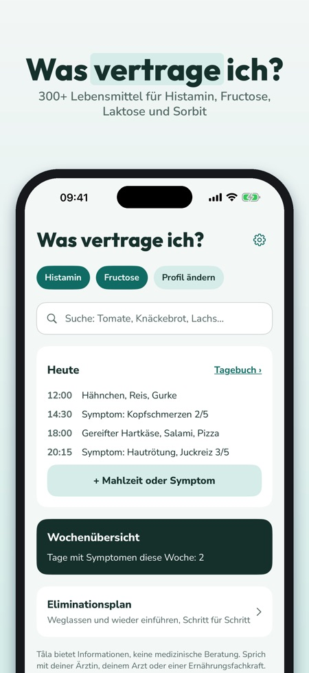
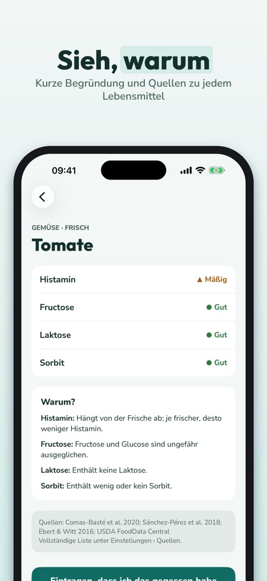

Unverträglichkeiten & Tagebuch. Kann ich das essen? 300+ Lebensmittel bewertet für Histamin, Fructose, Laktose und Sorbit – mit Quellen, Rezepten und einem Tagebuch für Essen und Symptome.



Kann ich das essen? Tåla zeigt es dir auf Deutsch – für Histamin, Fructose, Laktose und Sorbit.
Kein Konto – alles bleibt auf deinem iPhone. Fructose, Laktose und Sorbit gehören zu den FODMAP-Gruppen; Tåla zeigt keine Portionswerte.
LEBENSMITTELLISTE MIT 300+ LEBENSMITTELN
• Alltägliche Lebensmittel und skandinavische Spezialitäten: Knäckebrot, Roggenbrot, eingelegter Hering, Graved Lachs, Preiselbeeren, Lakritz und vieles mehr
• Eine Bewertung pro Unverträglichkeit: Gut, Mäßig, Meiden oder Variiert – mit Farbe, Form und Wort
• Warum? Eine kurze Begründung, z. B. gereift, fermentiert oder mehr Fructose als Glucose
• Quellen zu jedem Lebensmittel; wo die Quellen sich widersprechen, steht „Variiert“
MEIN PROFIL UND SUCHE
• Wähle deine Unverträglichkeiten – Liste und Suche zeigen, was für dich gilt
• Suche mit Alltagswörtern und Synonymen, auch österreichischen (Topfen, Paradeiser, Erdäpfel)
MEINE VERTRÄGLICHEN
• Speichere, was du verträgst und was du meidest
• „Im Laden zeigen“: eine große Liste für die Bedienung im Restaurant oder den Einkauf
TAGEBUCH
• Mahlzeiten aus der Liste oder in eigenen Worten eintragen, Symptome mit Stärke 1–5
• Wochenübersicht: Symptome pro Tag und was du in den 3 Stunden davor am häufigsten gegessen hast – eine Beschreibung deiner Notizen, keine Diagnose
ELIMINATIONSPLAN
• Auslassen, wieder einführen, eigene Liste – Phasen, die du mit Ärztin, Arzt oder Ernährungsfachkraft planst
• Protokoll für die Wiedereinführung
30 EIGENE REZEPTE
• Einfache Alltagsgerichte, gefiltert nach deinem Profil
PDF FÜR ARZTPRAXIS ODER ERNÄHRUNGSBERATUNG
• Tagebuch, Listen und Protokoll als PDF über das Teilen-Menü
TÅLA PLUS
Ohne Kauf: eine Unverträglichkeit, Suche, 50 Lebensmittel mit allen Details und 7 Tage Tagebuch. Tåla Plus öffnet alle Unverträglichkeiten, die ganze Liste, unbegrenztes Tagebuch, Wochenübersicht, Eliminationsplan, Rezepte und PDF. Wähle jährlich (die ersten 7 Tage ohne Kosten für neue Abonnenten, danach automatische Verlängerung, jederzeit kündbar in den App-Store-Einstellungen) oder lebenslang (einmaliger Kauf).
WICHTIG
Tåla ist eine Informations-App und kein Medizinprodukt. Sie stellt keine Diagnosen und ersetzt keine Ärztin, keinen Arzt und keine Ernährungsfachkraft. Die Bewertungen sind allgemeine Orientierung, Verträglichkeit ist individuell.
Tagebuch und Listen werden nur auf deinem iPhone gespeichert. Kein Konto.